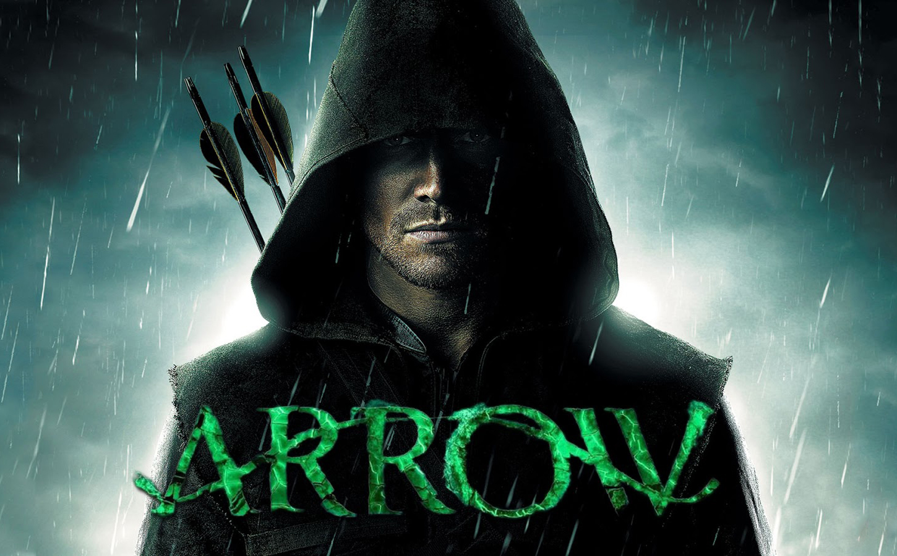

Arrow
Watch Wednesdays at 8/7c on The CW
After being marooned on a remote island, billionaire Oliver Queen returns home with a mysterious agenda and a lethal set of new skills that he uses in a war on crime in this hard-hitting action series. Reinventing the DC Comics character for a modern audience, the Arrow is not a superhero but a hero -- every bit as dangerous as the criminals he'’s hunting.
After suffering unimaginable ordeals on the island, the former fun-loving Oliver Queen returns to Starling City a new man. Determined to deliver justice to those who have corrupted his city, Oliver (aka The Hood) -- with the help of tech-savvy Felicity Smoak and his iron-fisted right hand, John Diggle -- narrowly averts the rich and powerful’s “Undertaking” to cleanse the city of its most desperate citizens. But Oliver’'s crusade is complicated by his emotional connections to friends and family, as the Queen family still trades on secrets that conflict with the Arrow'’s agenda.
Oliver'’s return also affects the love of his life, Laurel Lance, and he must find a balance between being there for her as Oliver Queen, and being there for Starling City as the Arrow. A dark and dangerous crime procedural with edge, intrigue and action, Oliver'’s story is told through his harrowing trials on the island, his connections to his mother, Moira, and sister, Thea, and the Arrow'’s adventures in Starling City. Showing all facets of the mysterious loner, the drama follows the charismatic Oliver that disappeared, the hardened Oliver that returned and the Oliver that'’s been forged into the weapon against injustice known as ... the Arrow
Cast
Oliver Queen
Laurel Lance
Tommy Merlyn
John Diggle

Thea Queen
Felicity Smoak
Roy Harper
Slade Wilson
Moira Queen
Malcolm Merlyn
Quentin Lance
Seasons
Season 1
1. "Pilot"
2. "Honor Thy Father"
3. "Lone Gunmen"
4. "An Innocent Man"
5. "Damaged"
6. "Legacies"
7. "Muse of fire"
8. "Vendetta"
9. "Year's end"
10. "Burned"
11. "Trust buy Verify"
12. "Vertigo"
13. "Betrayal"
14. "The Odyssey"
15. "Dodger"
16. "Dead to rights"
17. "The Huntress returns"
18. "Salvation"
19. "Unfinished business"
20. "Home invasion"
21. "The undertalking"
22. "Darkness on the edge of town"
23. "Sacrifice"
Season 2
1. "City of heroes"
2. "Identity"
3. "Broken dolls"
4. "Crucible"
5. "League of assassins"
6. "Keep your enemies closer"
7. "State v. Queen"
8. "The Scientist"
9. "Three Ghosts"
10. "Blast Radius"
11. "Blind spot"
12. "Tremors"
13. "Heir to the Demon"
14. "Time of death"
15. "The promise"
16. "Suicide squad"
17. "Birds of Prey"
18. "Deathstroke"
19. "The man under the hood"
20. "Seeing red"
21. "City of blood"
22. "Streets of fire"
23. "Unthinkable"
Season 3
1. "The calm"
2. "Sara"
3. "Corto Maltese"
4. "The magician"
5. "The secret origin of Felicity Smoak"
6. "Guilty"
7. "Draw back your bow"